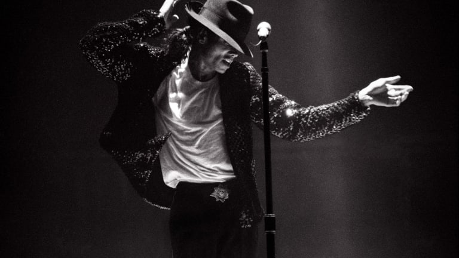
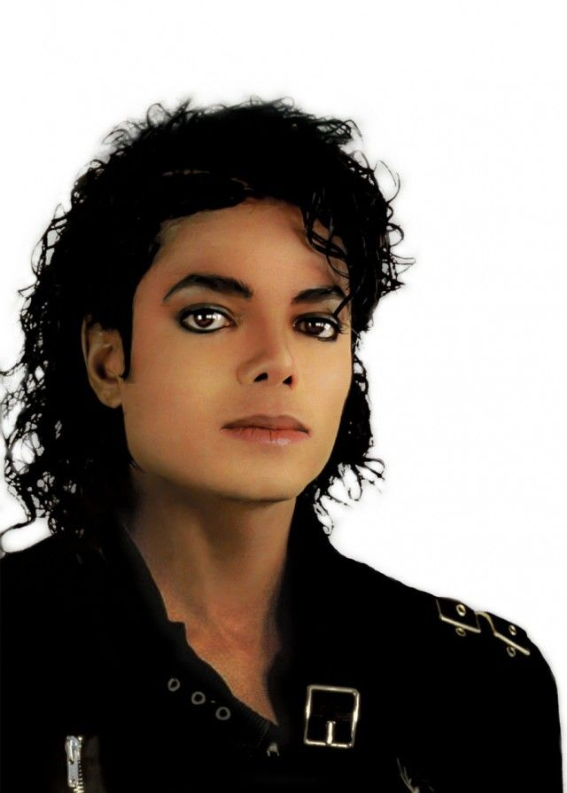
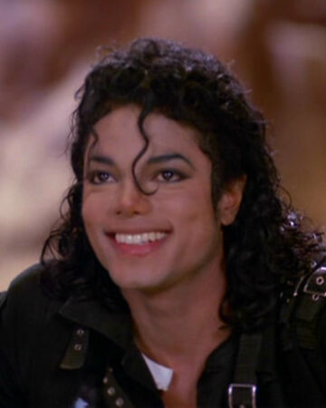
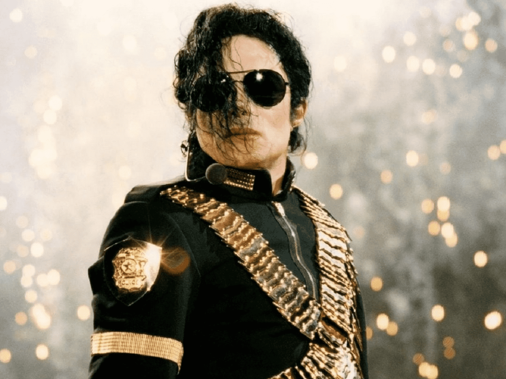
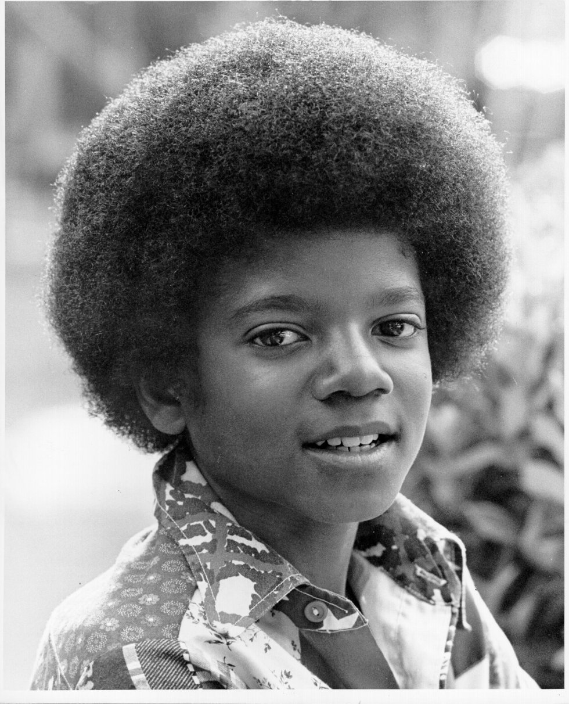
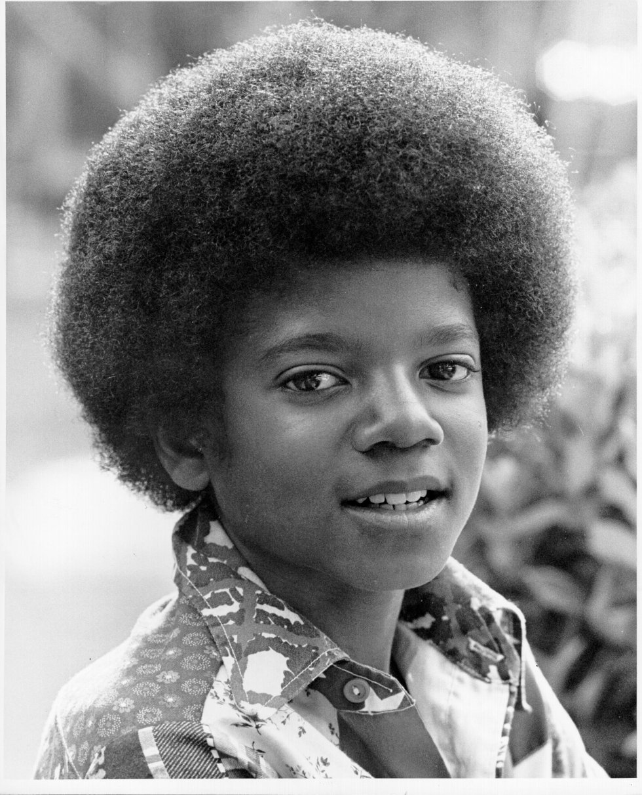
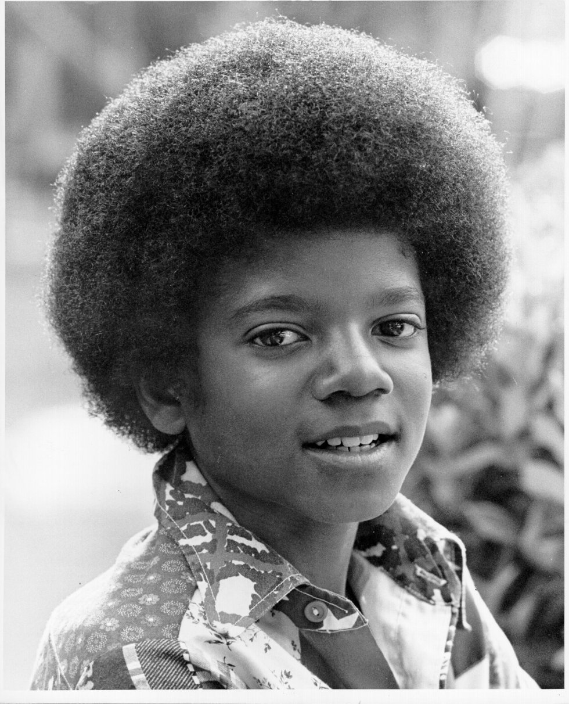

 

The King of Pop Music

The King of Pop Music
Known as the "King of Pop," Michael Jackson was a best-selling American singer, songwriter and dancer. As a child, Jackson became the lead singer of his family's popular Motown group, the Jackson 5. He went on to a solo career of astonishing worldwide success, delivering No. 1 hits from the albums Off the Wall, Thriller and Bad. In his later years, Jackson was dogged by allegations of child molestation. He died in 2009 at age 50 of a drug overdose just before launching a comeback tour.